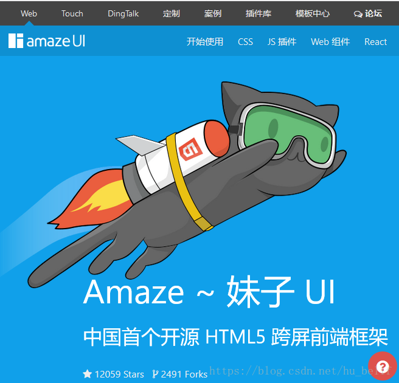

2018几大主流的前端框架
2018年07月28日 11:37:07
2016年开始应该是互联网飞速发展的几年，同时也是Web前端开发非常火爆的一年，Web 前端技术发展速度让人感觉几乎不是继承式的迭代，而是一次次的变革和创造。这一年中有很多热门的前端开发框架，下面为大家总结2016年至今最受欢迎的几款前端框架。
在这互联网飞速发展的信息时代，技术的更新迭代也在加快。目前看来，火了十几年的Java技术现在仍然是棵常青树。回想两年前初来咋到，也是想好好当一名java程序员，五年计划都行想好了，最后还是阴差阳错搞了前端。前端目前来看还是非常火的，随着IT技术的百花齐放，新的前端框架不断推出，但大多都还在狂吼的阶段。其实一直以来对技术的理解是技术服务于业务和产品，产品又在不同程度的推进着技术的演进。Web、无线、物联网、VR、PC从不同方向推进着技术的融合与微创新。程序员在不同业务场景下的角色互换。而随着Node.js的出现语言的角色也在发生着转变，js扮演了越来越重要的角色。也就有了茶余饭后也把了解到的知识整理一下。
前端UI框架组件库：
说到前端框架我第一印象中想起React、Vue和Angular，不知道你是否与我一样想到这些，现在常用的有：Bootstrap、jQuery UI、BootMetro、QUICK UI、AUI常用的还有很多、就不一一跟大家举例出来了，因为很多朋友认为在不同项目开发中用到的前端框架不一样，其实也有一款可以适用于多种项目开发的前端框架，只是没发现。
用前端框架开发项目的原因？
这个应该是最好解决的问题，首先就是减少造轮子的想法，能够快速的开发一款web应用对于公司来说都是非常愿意开到的，在时间和成本之间就能够节约很多的时间，这是其中一点，另外一点就是使用前端框架的组件功能，只要组件功能强大，什么样的项目都能够开发（前提是：要熟悉前端框架的功能！），时间成本问题就能够轻松解决。
没有设计师也能做出精美页面效果的前端框架
虽然市场中有很多的前端框架，但部分UI框架是属于组件库，然而QUICK UI跟当下流行的三大底层框架React、Vue和Angular不同，QUICK UI提供了一整套前端解决方案，包括前后端分离的开发框架、100多种功能强大的UI控件、几十套精美的皮肤模板和近16万字的开发文档，满足你所以开发项目都不是问题。
前端框架库：
1.Node.Js
地址：http://www.runoob.com/nodejs/nodejs-tutorial.html (中文网)
描述：Node.js是一个Javascript运行环境(runtime)。实际上它是对Google V8引擎进行了封装。V8引 擎执行Javascript的速度非常快，性能非常好。Node.js对一些特殊用例进行了优化，提供了替代的API，使得V8在非浏览器环境下运行得更好。
Node.js是一个基于Chrome JavaScript运行时建立的平台， 用于方便地搭建响应速度快、易于扩展的网络应用。Node.js 使用事件驱动， 非阻塞I/O 模型而得以轻量和高效，非常适合在分布式设备上运行数据密集型的实时应用。
简单的说 node.js 就是运行在服务端的 JavaScript。
Node.js 是一个基于Chrome javascript 运行时建立的一个平台。
Node.js是一个事件驱动I/O服务端JavaScript环境，基于Google的V8引擎，V8引擎执行Javascript的速度非常快，性能非常好。
用途：
1. RESTful API
这是NodeJS最理想的应用场景，可以处理数万条连接，本身没有太多的逻辑，只需要请求API，组织数据进行返回即可。它本质上只是从某个数据库中查找一些值并将它们组成一个响应。由于响应是少量文本，入站请求也是少量的文本，因此流量不高，一台机器甚至也可以处理最繁忙的公司的API需求。
2. 统一Web应用的UI层
目前MVC的架构，在某种意义上来说，Web开发有两个UI层，一个是在浏览器里面我们最终看到的，另一个在server端，负责生成和拼接页面。
不讨论这种架构是好是坏，但是有另外一种实践，面向服务的架构，更好的做前后端的依赖分离。如果所有的关键业务逻辑都封装成REST调用，就意味着在上层只需要考虑如何用这些REST接口构建具体的应用。那些后端程序员们根本不操心具体数据是如何从一个页面传递到另一个页面的，他们也不用管用户数据更新是通过Ajax异步获取的还是通过刷新页面。
3. 大量Ajax请求的应用
例如个性化应用，每个用户看到的页面都不一样，缓存失效，需要在页面加载的时候发起Ajax请求，NodeJS能响应大量的并发请求。总而言之，NodeJS适合运用在高并发、I/O密集、少量业务逻辑的场景。
2.angular.Js
地址：http://www.runoob.com/angularjs/angularjs-tutorial.html (中文网)
描述：AngularJS[1] 诞生于2009年，由Misko Hevery 等人创建，后为Google所收购。是一款优秀的前端JS框架，已经被用于Google的多款产品当中。AngularJS有着诸多特性，最为核心的是：MVVM、模块化、自动化双向数据绑定、语义化标签、依赖注入等等。
用途：通过描述我们应该就能很好的明白AngularJS的真实用途了，MVVM，模块化，自动化双向数据绑定等等。除了简单的dom操作外，更能体现Js编程的强大。当然应用应该视场合而定。
3.JQuery Mobile
地址：http://www.w3school.com.cn/jquerymobile/ (中文网)
描述：Query Mobile是jQuery 在手机上和平板设备上的版本。jQuery Mobile 不仅会给主流移动平台带来jQuery核心库，而且会发布一个完整统一的jQuery移动UI框架。支持全球主流的移动平台。jQuery Mobile开发团队说：能开发这个项目，我们非常兴奋。移动Web太需要一个跨浏览器的框架，让开发人员开发出真正的移动Web网站。
用途：jQuery Mobile 是创建移动 web 应用程序的框架。
jQuery Mobile 适用于所有流行的智能手机和平板电脑。
jquery Mobile 使用 HTML5 和 CSS3 通过尽可能少的脚本对页面进行布局。
4.require.js
地址：http://www.requirejs.cn/
描述：RequireJS的目标是鼓励代码的模块化，它使用了不同于传统script标签的脚本加载步骤。可以用它来加速、优化代码，但其主要目的还是为了代码的模块化。它鼓励在使用脚本时以module ID替代URL地址。
RequireJS以一个相对于baseUrl的地址来加载所有的代码。 页面顶层script标签含有一个特殊的属性data-main，require.js使用它来启动脚本加载过程，而baseUrl一般设置到与该属性相一致的目录。
用途：模块化动态加载。
5.Vue.js
地址：http://cn.vuejs.org/
描述：Vue.js 是用于构建交互式的 Web 界面的库。它提供了 MVVM 数据绑定和一个可组合的组件系统，具有简单、灵活的 API。从技术上讲， Vue.js 集中在 MVVM 模式上的视图模型层，并通过双向数据绑定连接视图和模型。实际的 DOM 操作和输出格式被抽象出来成指令和过滤器。相比其它的 MVVM 框架，Vue.js 更容易上手。
6.backbone.js
地址：http://www.css88.com/doc/backbone/
描述：Backbone 为复杂Javascript应用程序提供模型(models)、集合(collections)、视图(views)的结构。其中模型用于绑定键值数据和自定义事件；集合附有可枚举函数的丰富API； 视图可以声明事件处理函数，并通过RESTful JSON接口连接到应用程序。
7.React.js
地址：http://reactjs.cn/react/docs/why-react.html
描述：React 是一个 Facebook 和 Instagram 用来创建用户界面的 JavaScript 库。很多人认为 React 是 MVC 中的 V（视图）。我们创造 React 是为了解决一个问题：构建随着时间数据不断变化的大规模应用程序。为了达到这个目标，React 采用下面两个主要的思想。
8.Amaze UI

Amaze UI是轻量级的前端应用框架，是国内比较流行的框架，比较适用于移动端响应式开发框架，可以按照项目要求生成专属的UI框架库进行使用，组件非常丰富，可以构建出漂亮的web页面。
官网地址：http://amazeui.org/
三、可视化组件
1.Echarts
地址：http://echarts.baidu.com/
描述：ECharts，一个纯 Javascript 的图表库，可以流畅的运行在 PC 和移动设备上，兼容当前绝大部分浏览器（IE8/9/10/11，Chrome，Firefox，Safari等），底层依赖轻量级的 Canvas 类库ZRender，提供直观，生动，可交互，可高度个性化定制的数据可视化图表。
2.tableau(收费)
地址：http://www.yuandingit.com/special/tableau/index.html
描述：Tableau 是桌面系统中最简单的商业智能工具软件，Tableau 没有强迫用户编写自定义代码，新的控制台也可完全自定义配置。在控制台上，不仅能够监测信息，而且还提供完整的分析能力。Tableau控制台灵活，具有高度的动态性。
四、前端构建工具
1.gulp
地址：http://www.gulpjs.com.cn/
描述：易于使用
通过代码优于配置的策略，Gulp 让简单的任务简单，复杂的任务可管理。
构建快速
利用 Node.js 流的威力，你可以快速构建项目并减少频繁的 IO 操作。
插件高质
Gulp 严格的插件指南确保插件如你期望的那样简洁高质得工作。
易于学习
通过最少的 API，掌握 Gulp 毫不费力，构建工作尽在掌握：如同一系列流管道。